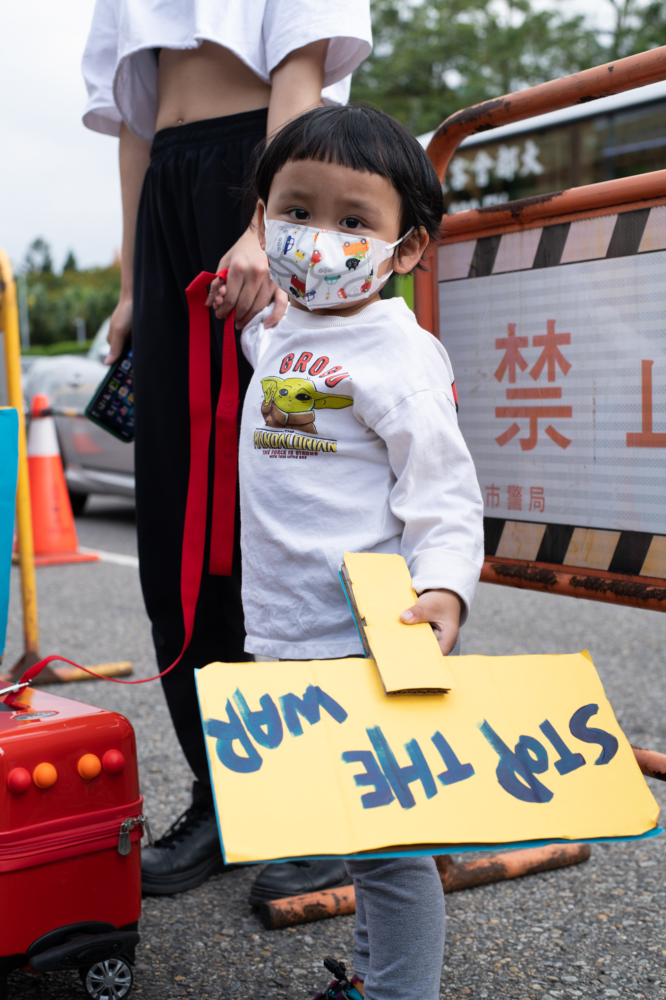

Street art. Chennai, India. Construction. Chennai, India. People over profit. New York, USA. Inside Climate News. Ghibli for life. Taipei, Taiwan.  Taiwan stands with Ukraine. Taipei, Taiwan. Arrests at the Federal Reserve. New York, USA. For Inside Climate News. Melissa makes dinner. Chicago, IL. For Block Club Chicago. Storytime. Chicago, IL. Finally home. Chicago, IL. For Block Club Chicago. Here's lookin' at you kid. Lanyu, Taiwan. Tea leaf selection. Alishan, Taiwan. Spring tea harvest. Alishan, Taiwan. Convenience store. Alishan, Taiwan. Paths unknown. Alishan, Taiwan. More on Medium.